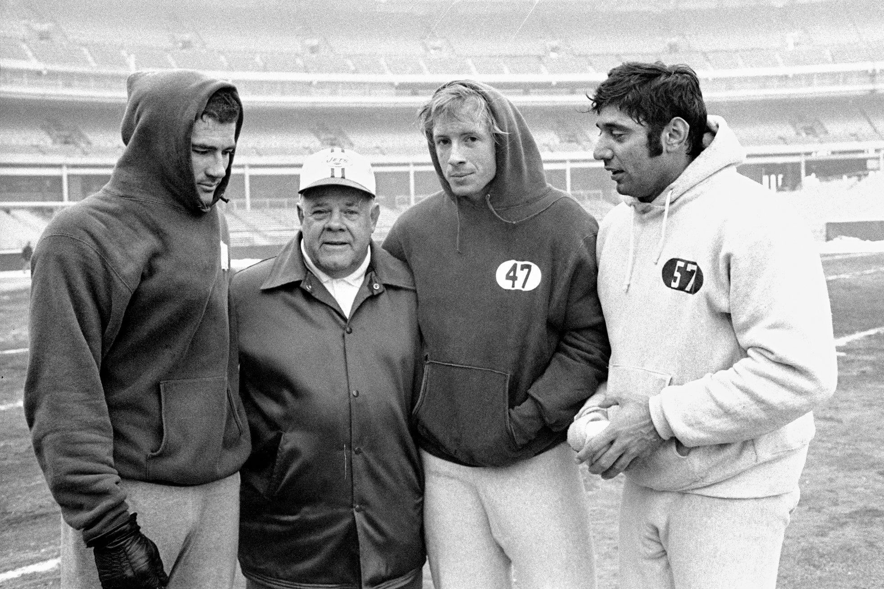
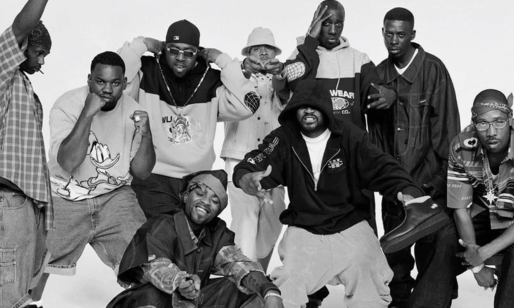
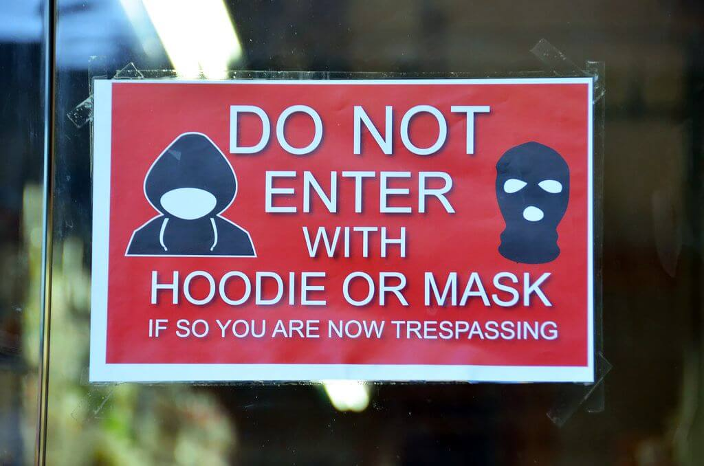
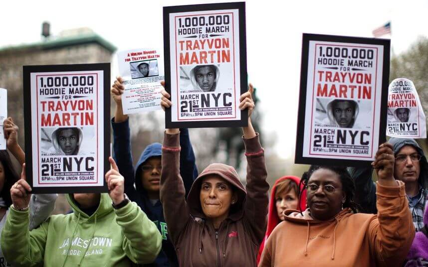
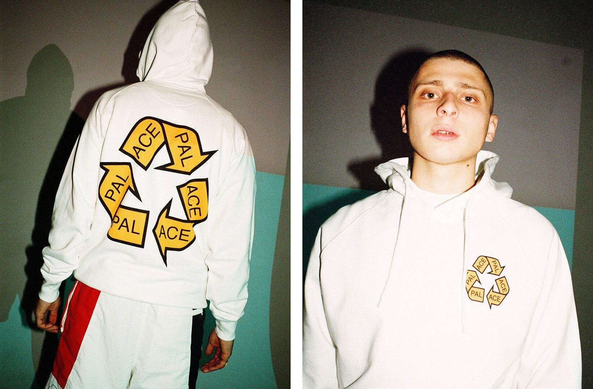
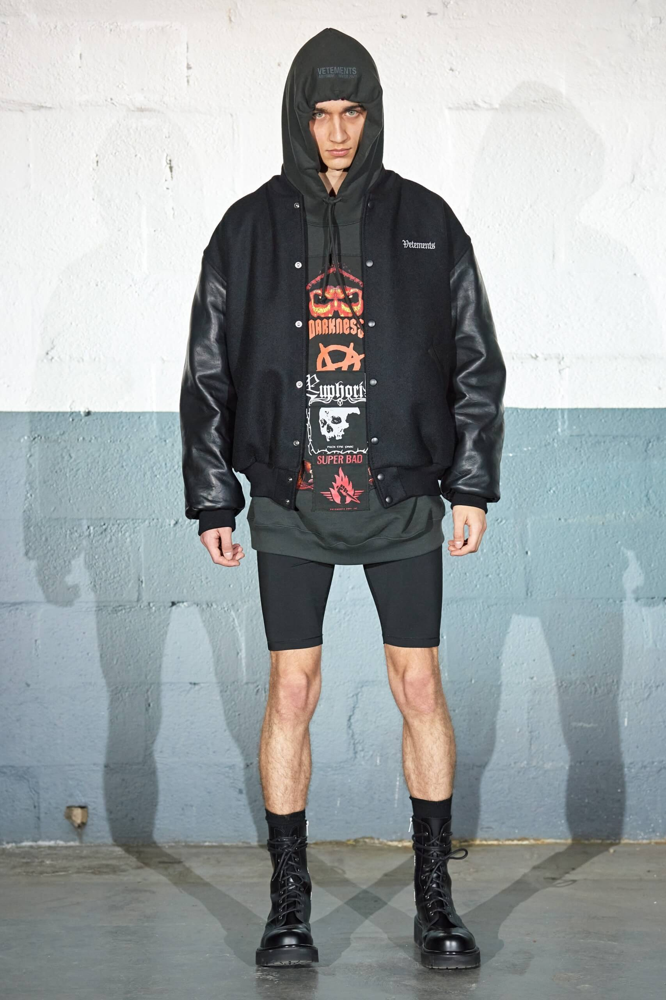
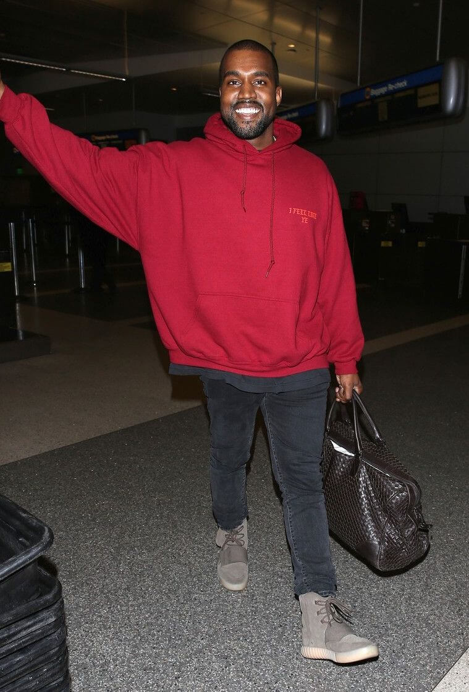

История возникновения худи
В том виде, в котором мы знаем его сегодня, худи был создан в 1930-х годах компанией Champion и считался не более чем утилитарным предметом одежды. Толстовки с теплой флисовой подкладкой и крепким капюшоном были разработаны для того, чтобы согревать рабочих, находящихся на морозильных складах Нью-Йорка. Поскольку Champion напрямую сотрудничал со многими университетами и спортивными отделениями средних школ, вскоре начинающие футболисты стали носить худи с логотипами учебных заведений. Кроме того, спортсмены часто дарили эти худи своим подругам, что превратило их из спецодежды в средство выражения персонального стиля.
Члены футбольной команды «Нью-Йорк Джетс», 1968 год
В 1970-х годах толстовки стали настоящим мейнстримом благодаря своей популяризации в трех совершенно разных видах культурной деятельности. Университеты по всей Америке начали печатать свои логотипы на толстовках и продавать их, распространяя предмет гардероба среди всех студентов. В Нью-Йорке брейкдансеры подающей надежды хип-хоп-сцены города носили толстовки, чтобы согреться перед танцами. Затем, в 1976 году, весь мир начал болеть за Рокки Бальбоа, скромного боксера в потрепанной серой толстовке, покоряющего Филадельфию.
Кадр из фильма «Рокки», 1976 год/p>
Худи как атрибут хип-хоп-культуры
Когда в 90-х годах Лос-Анджелес и Нью-Йорк сосредоточили в себе основную часть хип-хоп-движения, худи стали частью стиля рэперов, олицетворяющих нарастающий антиавторитарный гнев. Wu-Tang Clan, Cypress Hill и Snoop Dogg были среди бесчисленных хип-хоп-исполнителей, которые, одеваясь в oversize-толстовки и бейсболки, совершили музыкальную и модную революцию, которая навсегда изменила их индустрию. По мере того, как скейтбордисты, одевающиеся в Supreme, и серферы, покупающие одежду в Stussy, распространяли эту тенденцию в своих кругах, а представители хип-хопа добивались широкого коммерческого успеха, к концу десятилетия понятие «худи» закрепилось в мировом лексиконе.
Wu-Tang Clan в 1990-е годы
Где-то между тренировками Рокки и выходом альбома «Enter The Wu-Tang» толстовки незаметно проскользнули в более глубокие слои сознания молодежи. В 1980 году нью-йоркский дизайнер Норма Камали, основательница одноименной марки, представила свою коллекцию худи с начесом в нейтральных тонах и свободного кроя пуловерами в паре с плиссированными юбками и леггинсами. Вскоре компании Tommy Hilfiger и Ralph Lauren последовали ее примеру. Благодаря уже существующему опыту брендов в создании спортивной одежды — и, в случае с Tommy Hilfiger, помощи таких звезд 90-х, Как Кейт Мосс и Алия Хоутон, — толстовки плавно перешли от субкультурного явления к стильному гардеробу молодых законодателей моды и поп-культуры.
Худи и преступность
Но одновременно с тем, как худи пробирались в высшие слои, ближе к роскоши, они не могли избавиться от сомнительной репутации, которая преследовала их с момента создания. Это началось в 1970-х годах, когда граффити-художники примерили на себя этот стиль, используя капюшон, чтобы скрывать свои лица в то время, как они незаконно разукрашивают метро или здания. С появлением в 90-х годах хип-хоп-артистов, ведущих подрывную деятельность в крупнейших городских центрах Америки, их мешковатые худи стали ассоциироваться с преступностью.
Табличка, запрещающая вход в магазин в худи и масках
Связь между толстовками и криминалом сохранялась и в 2000-е годы, когда некоторые торговые центры Великобритании проводили политику «no-hoodie» (запрет на ношение худи в помещении), чтобы сдерживать праздношатание, кражу в магазинах или другое «антисоциальное поведение». Изначально эти запреты были адресованы подросткам, но за кампанией, направленной против ношения толстовок, скрывался глубокий расистский подтекст.
Million Hoodie March, 2012 год
Ситуация достигла апогея в 2012 году, когда безоружный 17-летний Трейвон Мартин был застрелен в охраняемом жилом комплексе во Флориде, где живет его семья. Убийца Мартина, член соседского дозора Джордж Циммерман, упомянул толстовку чернокожего подростка, из-за которой посчитал его «подозрительным», а позже он привел эту одежду в качестве доказательства, чтобы оправдать стрельбу. После смерти Мартина и последующего судебного разбирательства толстовки стали символом движения Black Lives Matter. Протестующие — от политических деятелей до членов баскетбольного клуба «Майами Хит» — надели худи в честь мальчика, и «Million Hoodie March» («Марш миллионов толстовок») охватил города по всей территории Соединенных Штатов.
Undercover
КупитьSupreme Bandana Box Logo FW19
КупитьStone Island x Supreme SS19
КупитьХуди в коллекциях модных брендов
С середины 2010-х годов появилась культура хайпбистов, которая превратила основные атрибуты уличной одежды в предметы охоты для толп ненасытных (и обычно состоятельных) поклонников моды. Ветераны стритвира, такие как Supreme и X-Girl, которые почти два десятилетия представляли нью-йоркскую и лос-анджелесскую скейт-сцену, выпуская футболки и худи со своими логотипами, стали частью «лингва-франки» модной индустрии. Молодые бренды уличной одежды, такие как Palace, Golf Wang, Awake NY и KITH, поддержали тенденцию своими капсулами, вдохновленными 90-ми, в каждой из которых были толстовки с логотипами.
Palace Spring/Summer 2016
По мере того, как хайпбисты закрепляли свои места за столом высокой моды, уличная одежда проникала в царство роскоши. Новые игроки модной арены 2010-х годов — Off-White, Yeezy и Vetements — дебютировали на подиуме с украшенными логотипами или рваными худи. Коллаборации 2017 года, такие как Fenty x Puma и Supreme x Louis Vuitton, способствовали распространению влияния уличной одежды на уровне высокой моды. Хотя такие партнерские отношения были неотъемлемой частью признания индустрии уличной одежды, они оттолкнули большинство клиентов, которые часто посещали официальные магазины стритвир-брендов. Если обычное худи Supreme стоило примерно $160, то модель Supreme x Louis Vuitton продавалась за $855 — в настоящее время ставки на StockX на нее достигают отметки $8 000.
Худи из коллекции Supreme x Louis Vuitton Fall 2017 в GTA 5
Худи начали появляться в коллекциях как молодых брендов, так и модных домов с богатой историей. В 2007 году Alexander Wang продемонстрировал свою теперь синонимичную с брендом роскошную спортивную эстетику, и с тех пор в каждой коллекции появляются свежие варианты пуловеров. Ориентированные на молодежь компании, включая Gucci, Balenciaga и Marc Jacobs, мгновенно стали обклеивать толстовки логотипами, продвигая свой продукт на рынок уличной одежды. Даже далекие от стритвира дома, такие как Dior и Saint Laurent, начали делиться своими собственными взглядами на этот стиль. С каждым худи от признанного роскошного гиганта уважение к этому предмету гардероба, некогда имевшему дурную репутацию, только росло. Толстовка с капюшоном, сшитая Gucci или Balenciaga, стала таким же товаром, как и строгая официальная одежда, которая поддерживает опорные столпы этих домов. Выпуская толстовки наряду с сшитыми вручную платьями и костюмами, индустрия роскоши (и те, кто мог себе это позволить) фактически разрушила стандарты внешнего вида и классовое деление гардероба, которые она сама построила.
Vetements Fall/Winter 2020 Menswear
Массовый тренд на худи
Одновременно с этим, благодаря разбирающимся в моде хип-хоп-гигантам, чьи музыкальные предшественники создали прецедент ношения удобной одежды, на рынке толстовок образовалась новая ниша. В 2016 году Канье Уэст отметил релиз своего альбома «The Life Of Pablo» открытием в 21 городе поп-ап-сторов с футболками и толстовками с указанием названия альбома в фирменном готическом шрифте. В 2018 году, во время своего тура «Astroworld», Трэвис Скотт представил мерч, который после распродажи в магазинах теперь имеет свой собственный раздел как в Stadium Goods, так и в Round 2. В 2019 году Kid Cudi в честь запуска альбома «Entergalactic» сотрудничал с Cactus Plant Flea Market для продажи светящихся в темноте худи, которые до сих пор остаются одними из самых востребованных уличных граалей. Не так давно выпущенный мерч Уэста к Sunday Service повторил успех «The Life Of Pablo», как по уровню спроса, так и по влиянию.
Канье Уэст в мерче «The Life Of Pablo»
Сегодня, после долгого путешествия между футбольными полями, акциями протеста и подиумами, худи стали одним из самых характерных символов статуса. Почти что за век простая толстовка Champion прошла путь от складских помещений до домашней страницы Farfetch.
Поскольку уличная одежда теперь сама по себе является индустрией, толстовка одновременно выполняет роль ее основного продукта и катализатора, так как эта эволюция продолжается. Некоторые худи повышают уличный авторитет владельца только за счет своей исключительной эксклюзивности, в то время как другие являются продуктами брендов, которые попали под радар хайпбистов, что также вызывает уважение. Современная толстовка обрела статус представителя ультра-нишевых сообществ, объединив узнаваемость уличной одежды с уникальностью. Любимые миллениалами бренды, такие как Glossier и Erewhon Market, также выпустили толстовки с печатными логотипами, приведя своих поклонников в восторг. Эти толстовки олицетворяют то же самое финансовое благополучие и востребованность, что и их хайпбистовые родственники — не каждый может позволить себе кокосовый йогурт за $25 в Erewhon, точно так же, как не каждый смог попасть на воскресную службу в Coachella.
С учетом того, что в обозримом будущем весь мир все еще будет сидеть дома, можно с уверенностью сказать, что царствование худи не скоро подойдет к концу. С каждым снимком знаменитости в стиле стритвир, открытием поп-ап-стора с хип-хоп-атрибутикой и дропом уличной одежды худи становится все более прочным и универсальным предметом гардероба. И хотя влияние толстовки остается неуловимым — подпитываемым страхом упустить что-то трендовое, защищенными паролем релизами и все более нишевыми клиентскими базами — она по праву находится на своем троне. Удобство есть и всегда будет королем.